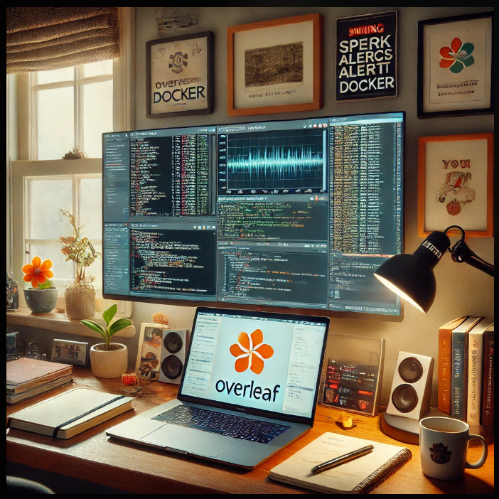

Mine actually turned out as a cozy yet tech-savvy workspace with a laptop displaying multiple screens. one showing Overleaf with a LaTeX document, another running Spark processes in Docker, and a cybersecurity alert dashboard open. Research papers, a notebook, and a cup of coffee are neatly arranged on the desk. The room has a personal touch, with family photos, a small jasmine flower symbol (hinting at an election campaign), and motivational quotes on the wall. The environment reflects a balance of intense focus and warmth, symbolizing resilience and ambition.

What does your picture look like when you prompt ChatGPT?